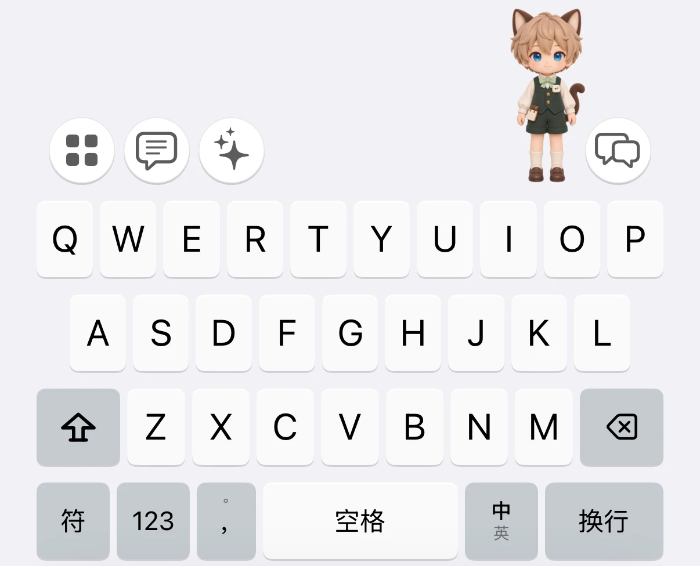
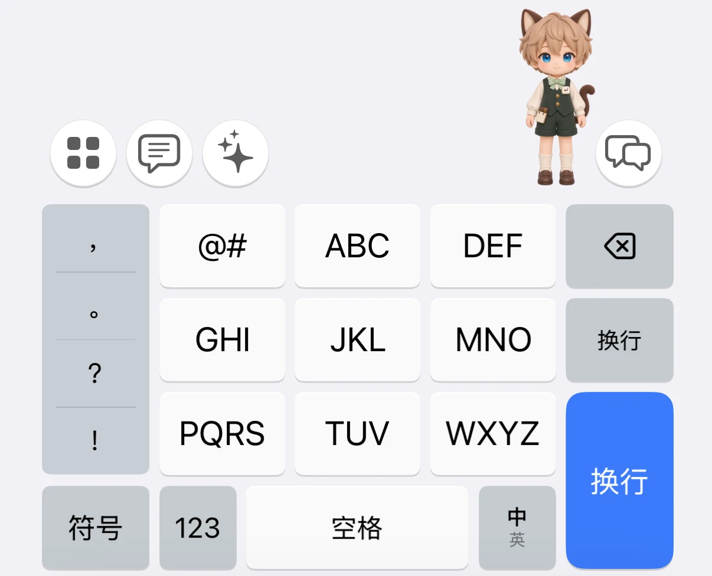
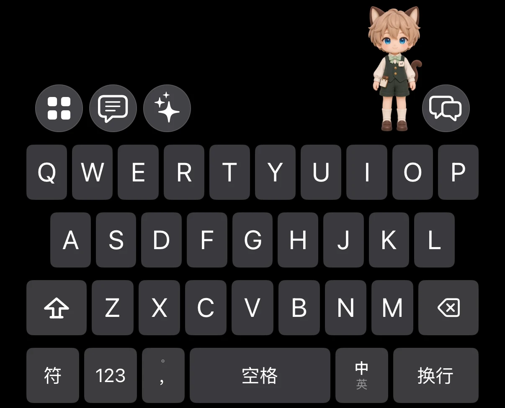

原生皮肤
键盘功能
- 输入与工具
- 切换全拼 26 键、小鹤双拼或拼音九键。符号和剪贴板也能直接从键盘打开。
- 拟回复
- 复制收到的消息，打开 AI 回复。选中的句子会填进输入框，可以编辑后再发。
- 皮肤与角色
- 原生皮肤可以跟随系统切换浅色和深色。在 App 的「梦角」里可以更换键盘角色。制作自己的皮肤
内测说明
梦键目前通过 TestFlight 内测。已有邀请的用户可以在 TestFlight 安装。正式版发布后，下载入口会更新在这里。
支持 iOS 和 iPadOS 16 及以上版本。